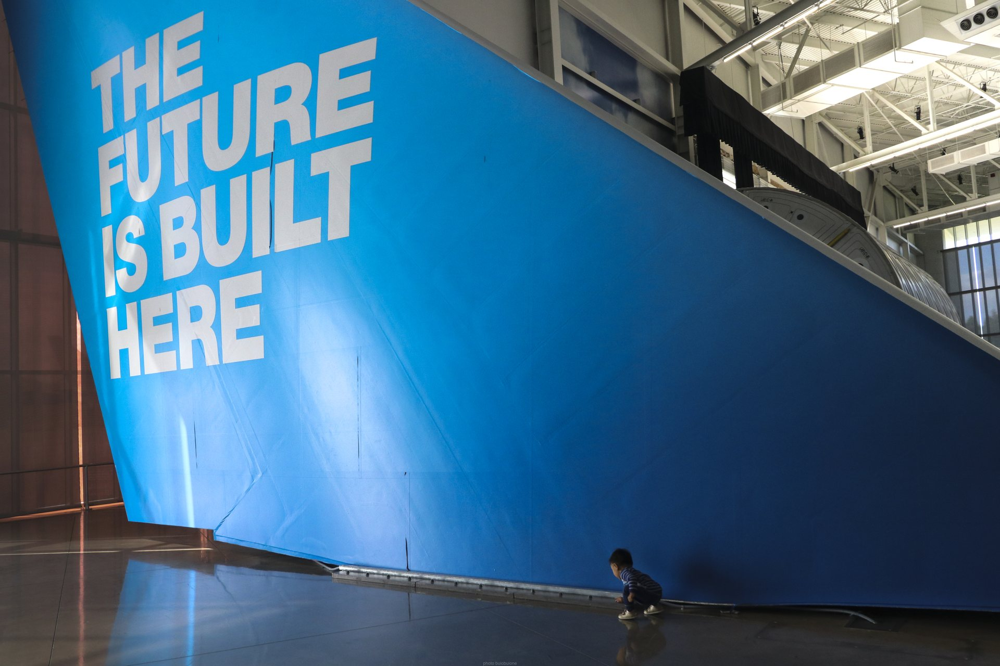

Incidents / Boeing ransomware claim by INC Ransom, Nov 20, 2026 · Incident date · First published
Was Boeing hacked by the INC Ransom group?
Also reported as the Boeing leak-site claim and the Boeing helicopter unit claim.


Is it a hack? The short answer
Not establishedNot established. INC Ransom claims it took 3.6 million files from a Boeing helicopter support unit. Boeing has said nothing, no filing exists, and no one independent has verified the claim.
Rests on Boeing's systems, or its helicopter support unit's, were breached · INC Ransom listed Boeing on its leak site on Nov 20 · Boeing has confirmed no breach
This is the current answer, not a final verdict. A final verdict is published only after the site's owner has reviewed the evidence.
At a glance
Known so far
Not known yet
- Whether any intrusion happened, and at which Boeing or joint-venture system.
- Whether the files and screenshots are real.
- Whether the unit is part of Boeing's own network.
- Whether Boeing will make a statement or file with the SEC.
- Whether the group will publish more data.
02Was Boeing hacked? What has been said
2
Not establishedBoeing's systems, or its helicopter support unit's, were breachedNothing public confirms any intrusion, which system it touched or what data left.
Why it supports Cybernews calls the scope impossible to verify, and PlayCISO says no one independent has checked the claim.
The only support is the gang's claim and screenshots, which no independent source has checked. Extortion groups often name a large company for pressure.
UnverifiedThe data shown is real and from BoeingNo independent check of the screenshots or files has been published.
Why it supports Cybernews describes the samples and says their scope cannot be verified.
Cybernews analyzed the samples but says it cannot verify them.
03What does the group claim?
5
ConfirmedINC Ransom listed Boeing on its leak site on Nov 20Ransomware tracker ransomware.live logged a Boeing entry attributed to INC Ransom, discovered Nov 20 at 03:46 UTC (Nov 19, 10:46 PM ET).
Why it supports A tracker, Cybernews and PlayCISO each report the listing; Cybernews says it saw it on the leak site. The three do not share a source, but all depend on the gang's own post, so this confirms only that the post exists.
We did not visit the leak site. The listing is known through a tracker and through press. A listing is a claim, not proof of a break-in.
ReportedThe gang says it took 3.6 million files from seven production servers at Boeing Sikorsky Aircraft SupportThe post claims over 3.6 million files, 33 years of data and email archives from a Boeing-linked helicopter support unit at Fort Campbell, Kentucky.
Why it supports The tracker copies the post and Cybernews summarizes it, saying the claim cannot be verified.
This is the gang's description, relayed by the tracker and Cybernews. Cybernews says it is impossible to independently verify the scope. The group also says the unit is a Boeing subsidiary; PlayCISO notes Boeing's own 1997 release called it a Boeing and Sikorsky joint venture, which matters for whether Boeing's own network was touched.
ReportedThe gang released about 10 screenshots as proofCybernews says the group had released just 10 screenshots of supposedly stolen data at the time of writing.
Why it supports Cybernews describes the screenshots and what its researchers made of them.
Cybernews says its researchers analyzed the samples and think they may link to the support unit. That is the outlet's assessment, not a finding that the data is real.
ConfirmedBoeing has confirmed no breachAs of Nov 20, Boeing had made no public statement about the claim, and its newsroom has nothing on it.
Why it supports Boeing's newsroom, read on Nov 20, lists nothing about a cyber incident; its latest release is a Nov 15 aircraft order. PlayCISO reports the same check.
Cybernews said it had asked Boeing for comment and would update when it replied. We found no reply.
ConfirmedBoeing has filed no cybersecurity 8-KBoeing's SEC filing list shows no Item 1.05 cybersecurity 8-K; its latest 8-K, from Oct 27, covers quarterly results.
Why it supports EDGAR's list of Boeing filings, read on Nov 20, shows the Oct 27 results 8-K as the latest; PlayCISO reports the same.
A company may judge an incident not material and not file. No filing does not show there was no incident.
04Questions and rumors
3
Not establishedWas Boeing hacked by the INC Ransom group?Not established. INC Ransom claims it took 3.6 million files from a Boeing helicopter support unit. Boeing has said nothing, no filing exists, and no one independent has verified the claim.
What would settle it A Boeing statement or SEC filing, or independent confirmation that the data is real.
Rests on Boeing's systems, or its helicopter support unit's, were breached · INC Ransom listed Boeing on its leak site on Nov 20 · Boeing has confirmed no breach
UnverifiedIs the data INC Ransom showed real?Unverified. The group posted about 10 screenshots. Cybernews analyzed them but says it cannot independently verify them.
What would settle it Boeing confirming or denying, or an independent expert verifying the samples.
Rests on The data shown is real and from Boeing · The gang released about 10 screenshots as proof
ReportedDoes the claim involve Boeing itself or a separate unit?Reported: the gang names Boeing Sikorsky Aircraft Support at Fort Campbell, which it calls a Boeing subsidiary. A 1997 Boeing release called it a joint venture, so which network was involved is unclear.
What would settle it A Boeing statement on who owns and runs the unit and its systems.
05Timeline of the claim
3
Tracker logs a Boeing entry on the INC Ransom leak siteConfirmed
Ransomware tracker ransomware.live logged a Boeing entry attributed to INC Ransom, discovered Nov 20 at 03:46 UTC (Nov 19, 10:46 PM ET).
Why it supports A tracker, Cybernews and PlayCISO each report the listing; Cybernews says it saw it on the leak site. The three do not share a source, but all depend on the gang's own post, so this confirms only that the post exists.
We did not visit the leak site. The listing is known through a tracker and through press. A listing is a claim, not proof of a break-in.
Nov 20 Cybernews reports the claim and says it cannot verify itReported
The post claims over 3.6 million files, 33 years of data and email archives from a Boeing-linked helicopter support unit at Fort Campbell, Kentucky.
Why it supports The tracker copies the post and Cybernews summarizes it, saying the claim cannot be verified.
This is the gang's description, relayed by the tracker and Cybernews. Cybernews says it is impossible to independently verify the scope. The group also says the unit is a Boeing subsidiary; PlayCISO notes Boeing's own 1997 release called it a Boeing and Sikorsky joint venture, which matters for whether Boeing's own network was touched.
Nov 20 No Boeing statement or cybersecurity 8-K at the time of checkingConfirmed
As of Nov 20, Boeing had made no public statement about the claim, and its newsroom has nothing on it.
Why it supports Boeing's newsroom, read on Nov 20, lists nothing about a cyber incident; its latest release is a Nov 15 aircraft order. PlayCISO reports the same check.
Cybernews said it had asked Boeing for comment and would update when it replied. We found no reply.
07What we checked and did not find
We looked for these and did not find them as of 8 PM ET on Nov 20, 2026.
- A Boeing statement about the claim (the newsroom's latest release is a Nov 15 aircraft order).
- A cybersecurity (Item 1.05) 8-K from Boeing; the latest 8-K is dated Oct 27.
- Independent verification of the screenshots or the file counts.
- A government statement about the claim.
- The leak site itself. We did not visit it; the claim is cited through a tracker and press.
08Update log
1
- INC Ransom claims a Boeing helicopter support unit breach on Nov 20; Boeing has said nothing and no one has verified it. First draft. 5 sources (2 Tier 1: Boeing newsroom and SEC filings, checked with no statement), 9 claims (3 Confirmed, 4 Reported, 1 Unverified, 1 Not established), 3 questions. Main answer is Not established: the claim rests on the gang's post. The leak site was not visited. Not checked: BleepingComputer's 2023 story, cited via PlayCISO. Staleness check done. Privacy check done: the gang's post names individuals and was not repeated here.